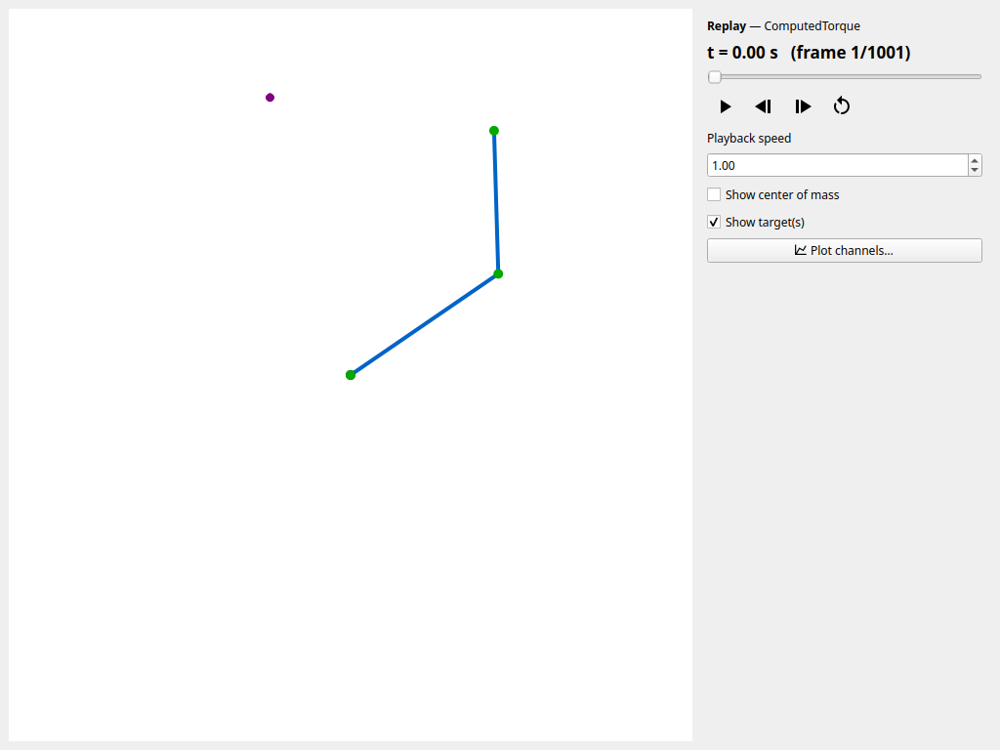

Record, Replay, and Re-simulate
Every simulator records its run to a self-contained *.sklog.npz state log:
the robot geometry, the recorded channels (joint angles, velocities, torques,
external tip force, viscous friction — plus the live active-target index in the
multi-target simulator), and — for scenario runs — the full scenario config and
resolved run settings. This guide covers what you can do with a log: replay it,
plot it, export it to video, and re-simulate it.
Replay in the player
The motion is reconstructed and animated from the log without re-running the
dynamics. Scrub the timeline and drive playback from the transport bar (Space
play/pause, ←/B and →/F previous/next frame while paused, R/Home
back to start, End last frame) at a chosen speed (--speed), toggle the
centers of mass (--show-com), and open per-channel plots with Plot
channels…. A recorded external tip force is drawn as a red arrow (Show
external force). When the log embeds a task (any scenario simulator records
it), the player draws the task context — the target (the active one emphasized
for multi-target tasks), the periodic curve, or the reference trajectory — each
toggled with Show target(s) / Show reference. A multi-target recording
carries the live active-target index, so the emphasized marker follows the
switches you made during the run.

Play several logs
Give several logs to replay them as a playlist, for example the takes of a recording session:
The playlist is docked on the right of the player — the window widens to make
room — and lists the files by name (hover for the full path). Its title-bar
button floats it as a window of its own, and you can dock it back on either
side. Double-click a file — or select it and press Enter — to load and play
it. When a log finishes, the next file plays, and the end of the list stops.
N / P load the next / previous file, keeping playback running if it was;
they and the other player keys (Space, …) work while the list has the focus.
The side panel and the window title name the playing file, Plot channels…
plots that file, and your speed and overlay toggles carry over from file to
file. A file that cannot be replayed is greyed out with the reason and skipped.
The Playlist button (or the dock's close button) hides the playlist, and the
button shows it again; the window narrows and widens with it (and when you float
the playlist off or dock it back), so the canvas and side panel keep their size —
except in a maximized or full-screen window, whose size the desktop decides.
Closing the player closes the playlist too. --export renders a
single log, so export each file separately.
Export to video
Pass --export PATH to render the replay headlessly to a video or animated GIF
— the format comes from the extension, each frame is drawn by the same canvas
(task overlay, centers of mass, and force arrow included), and --fps sets the
output frame rate (--speed and --show-com apply too):
uv run python tools/player.py run.sklog.npz --export run.mp4 # headless mp4
uv run python tools/player.py run.sklog.npz --export run.gif --fps 24 # headless animated gif
Add --panel to composite a simulator-style side panel into each frame: the
time readout, per-joint sliders, tip position and speed, and the recorded
parameter readouts (external-force magnitude, viscous friction, active target)
where the log carries those channels. A sample panel export:
The three reproducibility tiers
"Reproducible" means different things for different run types. Three tiers, from strongest to weakest:
- Recorded-state playback — every saved log replays in the player and plots/exports exactly as recorded. This always works: the channels are the run.
- Deterministic headless re-simulation — a
run_scenariolog can be re-simulated withrerun_log. The deterministic controllers reproduce the recorded channels exactly; MPC matches within a small numerical tolerance (details below). - Interactive (GUI) runs — a GUI recording carries the same config and
resolved settings, but mouse-drag tip forces, any GUI friction, and live
target switches in the multi-target simulator shaped the recorded motion and
are not replayed by
rerun_log: a re-simulation gives the unperturbed scenario with the configured active target, not the recorded motion. Use playback (tier 1) to revisit such a run; the drag force is recorded as theext_forcechannel and the switches as theactive_targetchannel for analysis.
A log written by run_scenario or the interactive scenario simulators embeds —
in the log's [extra] metadata — the resolved, self-contained scenario
config (the full [skeleton] / [initial] / [task] / [simulator] /
[controller] tables as the run actually used them: section overrides are
merged in, and a tracking task's file-based reference samples are inlined so the
log needs no other file), the resolved run parameters (dt / grav_vec /
enforce_limits, plus duration for headless runs — a GUI run is open-ended,
so its log records no duration and a re-run falls back to the task's), and the
skelarm / numpy / scipy versions. enforce_limits records the resolved
joint-limit choice, so a --no-joint-limits override is reproduced on re-run
even though the source config still reads true.
Re-simulate with rerun_log
from skelarm import rerun_log
from skelarm.recording import StateLog
log = StateLog.load("reach.sklog.npz")
again = rerun_log(log) # rebuilds the scenario and re-runs the dynamics
Reconstruction reparses the embedded source config, so identical input gives
identical state. The deterministic controllers (PD, computed torque,
inverse-dynamics feedforward, and the reaching controllers) reproduce the
recorded channels exactly on the same machine. MPC calls
scipy.optimize.minimize, which is deterministic but only bit-identical for the
same scipy / BLAS build, so an MPC re-run matches within a small numerical
tolerance rather than exactly.
Export an editable config for comparison
To tweak parameters and compare, export the embedded config to an editable TOML
and re-run it. The export writes the resolved scenario config the run used
(overrides merged, reference samples inlined — not necessarily the input TOML
byte-for-byte): re-running it unedited reproduces an unperturbed, config-driven
run exactly, while editing
a value gives a controlled variant. Call-time overrides (a duration= or
enforce_limits= argument, a --no-joint-limits flag) live only in the run
metadata — they are honored by rerun_log but not written into the exported
TOML:
from skelarm import export_scenario_toml, load_scenario, run_scenario
from skelarm.recording import StateLog
export_scenario_toml(StateLog.load("reach.sklog.npz"), "edited.toml")
# ... edit a gain / target / duration in edited.toml ...
variant = run_scenario(load_scenario("edited.toml"))
From the command line, tools/export_config.py writes the config from a saved
log:
uv run python tools/export_config.py reach.sklog.npz --output edited.toml
uv run python tools/reaching_simulator.py edited.toml # explore the edited scenario in the GUI
uv run python tools/reaching_simulator.py edited.toml --save edited.sklog.npz # or re-run it headlessly
What is not captured
A controller built programmatically (not from a config) has no embedded
config, so its run is recorded without reproduction metadata and rerun_log
(and export_scenario_toml) reject it. Re-running is available for
scenarios loaded from TOML.
Related
- Run Controlled Scenarios — producing the logs.
- Teach and Track Trajectories — logs as motion references.
- Recording API —
StateLogitself.